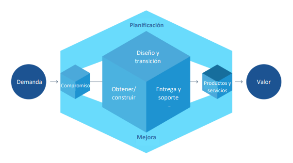
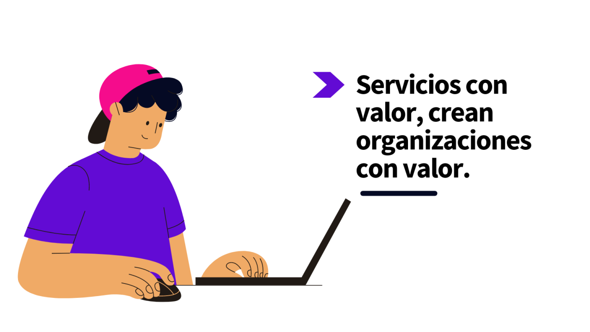

VALOR
Es fundamental una comprensión compartida de los conceptos clave y la terminología de ITIL para poder comprender mejor los desafios en el mundo real. Empezemos con el valor
Valor
“Valor es el beneficio percibido, utilidad e importancia de algo”.
VALOR DESDE LA PERSPECTIVA DE ITIL
Comprender el propósito y los componentes del Sistema de Valor del Servicio ITIL, y las actividades de la Cadena de Valor del Servicio, y cómo se interconectan
Aprender las diversas prácticas de ITIL y cómo contribuyen a las actividades de la Cadena de ValorLos desarrollos como el cloud computing, la infraestructura como servicio, machine learning y blockchain, han abierto nuevas oportunidades para la creación de valor y han llevado a que la TI se convierta en un importante impulsor de negocios y una fuente de ventaja competitiva
el Sistema de Valor del Servicio (SVS) y el Modelo de cuatro dimensiones. El SVS representa cómo los diversos componentes y actividades de la organización trabajan juntos para facilitar la creación de valor mediante servicios habilitados por TI.. El SVS facilita la integración y coordinación y proporciona una dirección fuerte, unificada y enfocada en el valor, para la organización.
Gestion de servicios
Antes de profundizar, primero entendamos la naturaleza del valor y la co-creación del valor.
El valor no es un concepto complejo, simplemente significa “ser útil”. Algo tiene valor para alguien, siempre que sea útil o importante y pueda ofrecer beneficios.
El proveedor de servicios entrega el valor a través de sus productos y servicios y el consumidor recibe el valor; pero ¿significa esto que el consumidor no desempeña ningún papel en la creación de valor para ellos mismos? ¡No exactamente! La relación entre un proveedor de servicios y el consumidor no es unilateral.
El valor se co-crea a través de una asociación activa y colaborativa entre el proveedor de servicios y el consumidor, así como otras partes interesadas.
Estas otras partes interesadas pueden ser inversionistas y accionistas, reguladores, socios y proveedores, comunidades y sociedades.Gestión de Servicios “La gestión de servicios se define como un conjunto de competencias organizacionales especializadas para entregar el valor a los clientes en forma de servicios”.
El desarrollo de las capacidades organizacionales especializadas mencionadas en la definición de gestión de servicios requiere un entendimiento de: 1- La naturaleza del valor 2-La naturaleza y alcance de las partes interesadas involucrada 3- Cómo la creación de valor es habilitada mediante servicios El enfoque clave de este módulo es el concepto de “valor”. Los diferentes conceptos clave de la gestión de servicios se analizan como conceptos, para crear valor mediante los servicio
Valor en diferentes prespectivas
El propósito de una organización es crear valor para las partes interesadas. Las diferentes personas, grupos o entidades en una organización siempre operan de manera integrada y coordinada para facilitar la creación de valor y cumplir un conjunto común de objetivos. El término “valor” es un concepto importante en la gestión de servicios y es un punto clave de ITIL 4.
El valor no es un término fijo; está sujeto a la percepción de las partes interesadas, ya sean clientes o consumidores del servicio o parte de la (s) organización (es) del proveedor del servicio.
Valor desde la Perspectiva de Diferentes Partes Interesadas El valor está sujeto a la percepción de los diferentes grupos de interés. Aquí hay un ejemplo genérico de diferentes partes interesadas y una definición de valor para estas partes interesadas.
“Es una configuración de los recursos de una organización designados para ofrecer valor a un consumidor”.
Organizaciones
Los servicios que proporciona una organización se basan en uno o más de sus productos. Las organizaciones poseen o tienen acceso a múltiples recursos, como personas, información y tecnología, flujos de valor y procesos, proveedores y socios. Los productos son configuraciones de estos recursos, creados por la organización, que potencialmente ofrecerán valor para sus clientes.
VALOR: RESULTADOS, COSTOS Y RIESGOS Servicios Facilitan Resultados “Un servicio es un medio para habilitar la co-creación de valor al facilitar los resultados que los clientes desean lograr sin que el cliente tenga que gestionar los costos y riesgos específicos.”
Desde la perspectiva del consumidor, se deben considerar ambos tipos de costos para evaluar el valor que el servicio creará. Es importante comprender ambos tipos de costos para garantizar que se tomen las decisiones correctas sobre la relación de servicios
Flujo de valor
Flujos de Valor Flujo de Valor “Un flujo de valor es una serie de pasos que una organización realiza para crear y entregar productos y servicios a un consumidor. Un flujo de valor es una combinación de las actividades de la cadena de valor de la organización”.
Utilidad y Garantía La evaluación de la utilidad y garantía general es importante para evaluar si un servicio o una oferta de servicios facilitará los resultados deseados para los consumidores y creará valor para ellos
Enfoque en Valor El principio “Enfoque en Valor” apunta a crear valor para los consumidores de servicios. Para lograr este valor, las organizaciones deben vincular las diferentes actividades (directa o indirectamente) que realizan de una manera lógica

Gestion de informacio
La gestión eficaz de la información es la principal forma de entregar valor a los clientes. Es el resultado clave de casi todos los servicios de TI consumidos por los clientes de negocio.
Consideremos el ejemplo de uno de los servicios de Recursos Humanos (RH) para comprender cómo crean valor para sus clientes al administrar la información. Crean valor mediante:
Permitir a la organización acceder y mantener información precisa sobre sus empleados, su empleo y sus prestaciones- Mantener la confidencialidad de los datos de los empleados al limitar el acceso a personas no autorizadas
Flujos de valor
Los flujos de valor del servicio son combinaciones específicas de actividades y prácticas donde cada flujo de valor está diseñado para un escenario particular. Una vez diseñados, los flujos de valor deben someterse a una mejora continua.
Por ejemplo, se puede crear un flujo de valor para una situación en la que un usuario de un servicio necesita que un incidente sea resuelto. El flujo de valor creado para este escenario proporcionará una guía completa de las actividades, prácticas y roles involucrados en la resolución de la situación. “Ejemplo de cadena de valor, prácticas y flujos de valor.
Una empresa de desarrollo de aplicaciones móviles tiene una cadena de valor, que permite el ciclo completo de desarrollo y gestión de aplicaciones, desde el análisis de negocio hasta el desarrollo, liberación y soporte. La compañía ha desarrollado una serie de prácticas, apoyadas con recursos y técnicas especializadas:
- Análisis de negocio
- Desarrollo
- Prueba
Estos son ejemplos de flujos de valor: combinan prácticas y actividades de la cadena de valor de varias maneras, para mejorar los productos y servicios, y aumentar el valor potencial para los consumidores y la organización”